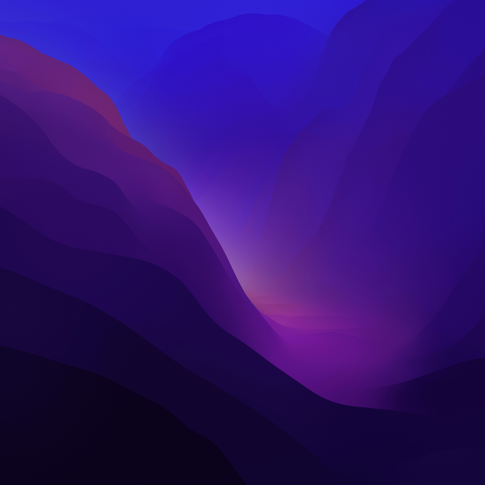

View
Cosmic
Sunset
Forest
Ocean
 B1
B1
 B2
B2
Apps Theme
Animation Colour
Cyan
Green
Red
Pink
Purple
Noir
Animation Effect
✨
Particles
💻
Matrix
🎵
Sonic
🌐
Mesh
⏹️
Static
Wallpaper
🚫
None
B1
B2

B3
☀️ Light
🌙 Dark
Talk to Sohan AI